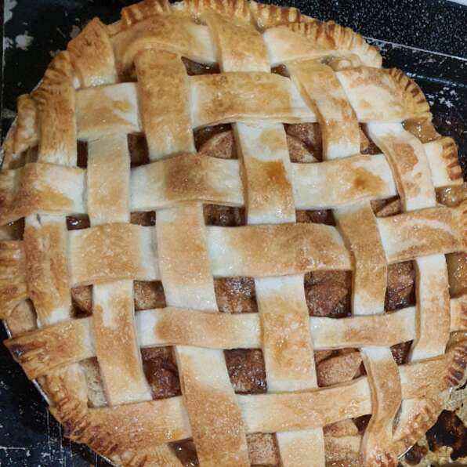

Apple Pie

Description
This is my mother's apple pie. This is the recipe I use all the time and I love it. I also use a dash of nutmeg so if you wish you can put that in too.
Ingredients
- 6 cups thinly sliced apples
- ¾ cup white sugar
- 1 tablespoon butter
- 1 teaspoon ground cinnamon
- 1 recipe pastry for a 9-inch double-crust pie
Steps
- Prepare your pastry for a two crust pie. Wipe, quarter, core, peel, and slice apples; measure to 6 cups.
- Combine sugar and cinnamon. The amount of sugar used depends on how tart your apples are.
- Arrange apples in layers in pastry lined pie plate. Sprinkle each layer with sugar and cinnamon. Dot top layer with small pieces of butter or margarine. Cover with top crust.
- Place on lowest rack in oven preheated to 450 degrees F (230 degrees C). Bake for 10 minutes, then reduce oven temperature to 350 degrees F (175 degrees C). Bake for 30 to 35 minutes longer. Serve warm or cold.